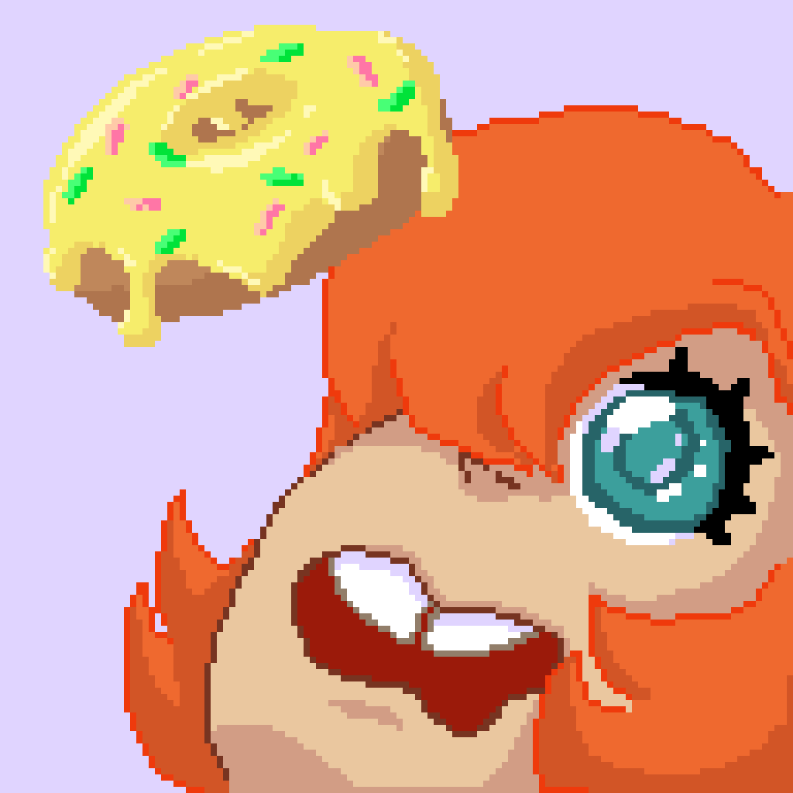

My name's Stephannie, but some of my friends call me Steph for
short, which I'm totally cool with. I'm a self taught artist, I love
drawing. I can draw both digitally and traditionally. I use various
mediums and I really enjoy drawing people in a cartoony style.
I've done some pixel art too, here's one I did for fun and made into
a simple animation:
